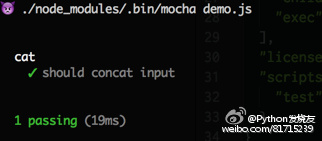
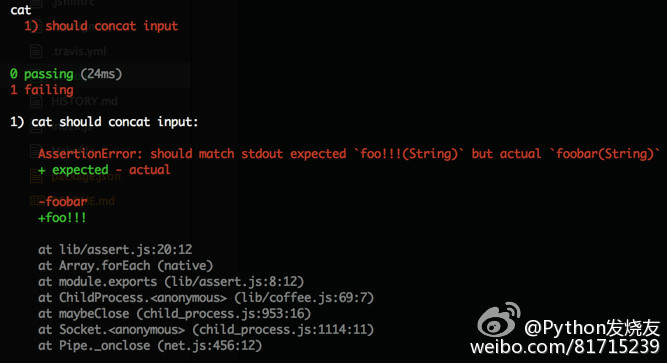

使用 coffee 来测试 cli 命令行工具
npm 团队最近也在大力推广使用 node 来开发 cli 命令行工具，Building a simple command line tool with npm。
可是，我们需要对 cli 工具写自动化测试吗？
- 不需要？那怎么保证质量？
- 需要？那怎么写自动化测试呢？
显而易见，我们都是有追求的程序员，当然要写测试啦！
本文将介绍基于由 @popomore 开发的 coffee 测试辅助工具，高效愉快地帮我们写测试代码。
前戏
coffee 的 api 设计，来源自非常出名的 http app 测试工具 supertest，我想你应该有使用过吧。
我们先来看看 supertest 是如何帮助我们愉快地编写单元测试代码的：
describe('GET /users', function(){
it('respond with json', function(done){
var app = express();
app.get('/user', function(req, res){
res.send(200, { name: 'tobi' });
});
request(app)
.get('/user')
.expect('Content-Type', /json/)
.expect({
name: 'tobi'
})
.expect(200, done);
});
});
Wooooo，原来写 express 应用的单元测试这么简单啊！再对比看看自己写的单元测试代码，是不是简单很多了？
高潮
好了，前戏过后，我们到高潮部分，看看 coffee 又是如何帮助我们愉快地编写测试代码的。
例如我需要对非常著名的 cat 命令行工具进行测试：
var coffee = require('coffee');
describe('cat', function() {
it('should concat input', function(done) {
coffee.spawn('cat')
.write('1') // 往标准输入写入1和2
.write('2')
.expect('stdout', '12') // 测试 cat 原样将1和2输出
.expect('code', 0) // 进程退出码为 0
.end(done);
});
});
通过 mocha 运行它，pass！

如何出错了，会有什么提示呢？我们修改一下测试代码：
it('should concat input', function(done) {
coffee.spawn('cat')
.write('foo')
.write('bar')
.expect('stdout', 'foo!!!')
.expect('code', 0)
.end(done);
});

会告知 stdout 输出没有满足期望了！
落幕
cat 例子太简单了？这么想就对了，说明你心动了，想写测试代码了！ 更多详细的例子，可以看看 coffee 本身的单元测试，它就是最好的示例代码！
有爱 💗
希望本文对你有用 :)